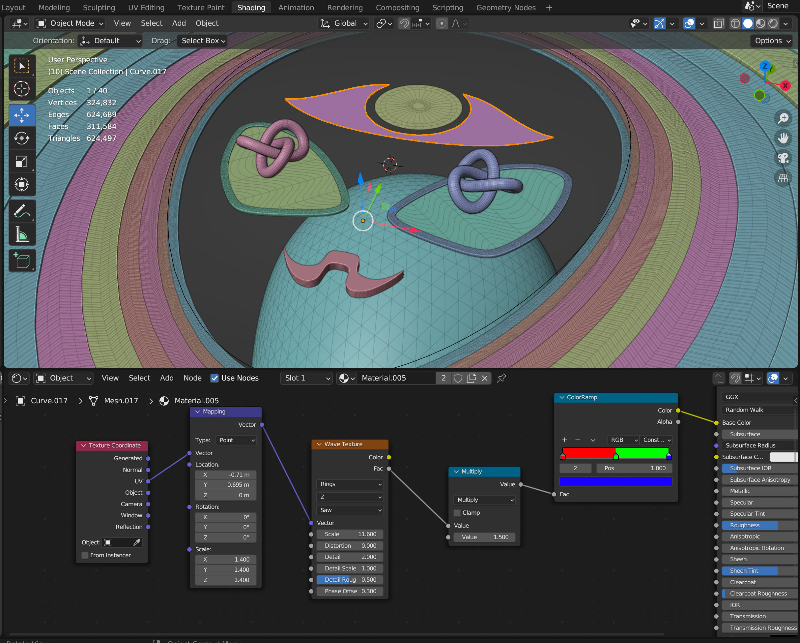
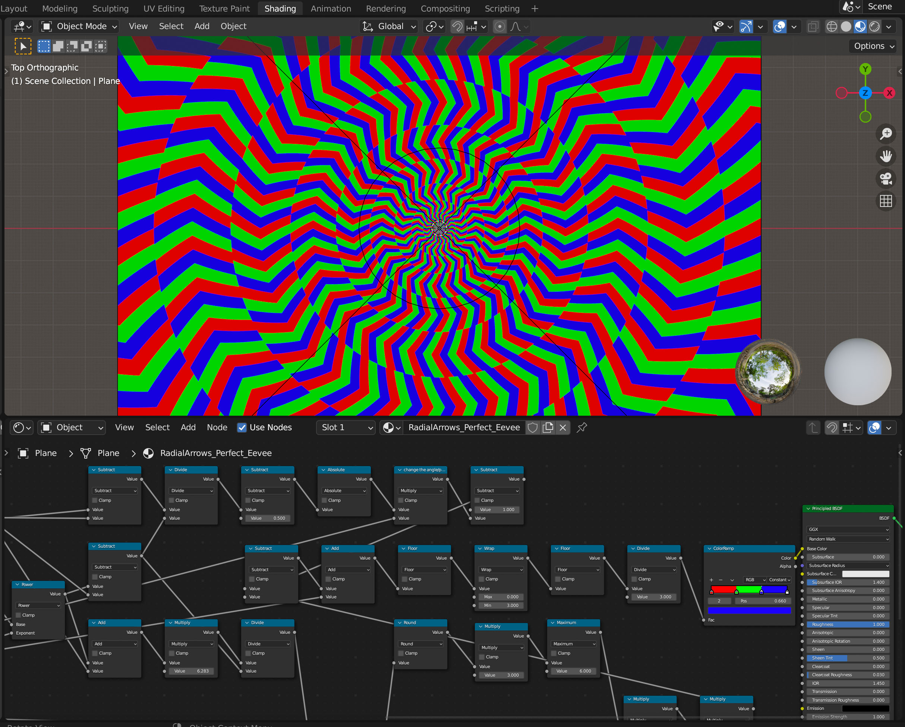

I’m a 20-year-old student and digital artist from Germany. My obsession with light-reactive art started when I bought a poster from the artist Trippy LED in his etsy shop. I was instantly amazed by how the artwork shifted and changed under different lights in my room. That experience inspired me to take the 2D technique he pioneered and figure out how to translate it into a fully 3D digital space to create my own style.
I work mainly in Blender, creating procedural textures and applying them to 3D geometry. Because I work in a 3D space, I can render realistic glass, infinitely small details, and complex lighting interactions. Things that are incredibly hard, if not impossible, to draw by hand. I’m really proud of the custom digital pipeline I’ve developed to build these exact, ultra-high-res pieces.
While the art starts on a screen, it is designed to be printed and viewed in the physical world. My 3D renders are specifically designed to interact with rapidly changing RGB light. When I finally printed my first render and tested it under my own lights, I was honestly blown away. The light bent through the printed 3D geometry to create a deep optical illusion, making the static image appear to physically move and shift. Seeing that effect come alive in person is what drives me to keep pushing the boundaries of this medium.

